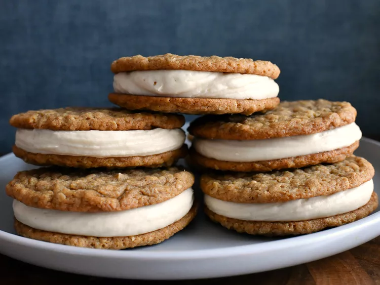

Sometimes it is a good thing to do a bad thing. Does that make any sense?
It doesn't have to! These cookies could bring down the toughest of people.
If you were to to take a piece of cloud, whip it up, combine it with a sacred treat that
only kings and queens can consume, this would be the outcome.
-
Brown Butter:
-
Cookies:
- 1 cup firmly packed dark brown sugar
- 1 tablespoon dark corn syrup
- 1 large egg, at room temperature
- 2 teaspoons vanilla extract
- 1 1/4 cups quick oats
- 1 cup all-purpose flour
- 3/4 teaspoon ground cinnamon
- 3/4 teaspoon salt
- 1/2 teaspoon ground nutmeg
- 1/2 teaspoon baking soda
- 1/4 teaspoon baking powder
- 1/8 teaspoon ground cloves
- 1/8 teaspoon ground allspice
-
Filling:
- 1 (8 ounce) package cream cheese, at room temperature
- 1 teaspoon vanilla extract
- 1/4 teaspoon salt
- 2 1/2 cups sifted powdered sugar, or as needed
- Place butter in a light colored saucepan over medium heat. Cook, stirring often, until butter has browned and begins to smell nutty, 7 to 10 minutes. Measure out 1/2 cup browned butter and pour into a large mixing bowl to cool to room temperature, 15 to 20 minutes. Reserve remaining browned butter (1/4 to 1/3 cup) for the filling.
- Stir brown sugar and corn syrup into the bowl with cooled brown butter until thoroughly combined; stir in egg and 2 teaspoons vanilla. Add in oats, flour, cinnamon, 3/4 teaspoon salt, nutmeg, baking soda, baking powder, cloves, and allspice and stir until combined.
- Scoop out 2 tablespoons of dough and carefully roll into a ball. Repeat with remaining dough. Place dough balls into the fridge to chill for about 30 minutes.
- Preheat the oven to 350 degrees F (175 degrees C). Line two baking sheets with silicone baking mats or parchment paper.
- Place chilled balls of dough about 3 inches apart on the prepared baking sheets (about 6 dough balls per pan). Bake one pan at a time until cookies begin to turn golden brown on the edges, 10 to 11 minutes. Allow cookies to cool on baking sheet for 10 minutes before removing to a wire rack to cool completely.
- To make filling, place cream cheese into a large bowl and beat with a mixer until soft and smooth. Beat in reserved 1/4 to 1/3 cup brown butter. Beat in 1/4 teaspoon salt and 1 teaspoon vanilla, then beat in 1 cup powdered sugar. Beat in remaining 1 1/2 cups powdered sugar as needed to make a smooth, spreadable filling. Place filling into a piping bag and snip off the end. Keep filling refrigerated until ready to use.
- When ready to fill cookies, match up two cookies of somewhat even shape and size. Lay one cookie top-side down and pipe about 1/4 cup filling onto the cookie. Top with matching cookie and press down until filling almost reaches the edges of the cookies. Repeat with remaining ingredients. Store finished cookies in the refrigerator.
Go Back